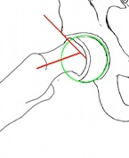

ORTHOPAEDIC STUDIO v1.2


.User manual
2. Anteroposterior visual scores
3. Anteroposterior quantitative measurements
5. False profile quantitative measurements
6. Frog image quantitative measurements
Download Pdf-version of the user manual (manual.pdf, 738kB)
Orthopaedic Studio does not have FDA clearance and is restricted to investigational use. No risk or liability is assumed regarding the use of Orthopaedic Studio or its documentation. Please read the disclaimer.
.1. General usage
Orthopaedic Studio can do hip evaluations on four different types of radiograph images: Anteroposterior (AP), Von Rosen, False Profile and Frog.
The procedure is self-explanatory and very similar for all types of images. The example below describes how to evaluate an AP image:
-
1.First open the AP image to be evaluated in OsiriX.
-
2.Start Orthopaedic Studio by selecting ‘Anteroposterior’ from the Orthopaedic Studio sub menu.
(Plugins -> ROI Tools -> Orthopaedic Studio -> Anteroposterior).
-
3.Select the appropriate visual scores for the current image. Then click the ‘Set markers’ button.
-
4.Place markers to identify landmarks within the image, in accordance with the on-screen instructions. Note that the markers can be moved after being placed. When all markers are placed, click the ‘Results’ button.
-
5.Review the results and perform changes if necessary.
-
6.Click on any of the save buttons to save the data to an Excel compatible file.
The other types of evaluations (i.e. Von Rosen, False Profile or Frog) are performed according to similar schemes. Substitute ’AP’ for any of the other evaluation types in steps 1 and 2 above and follow the on-screen instructions.
Note that Orthopaedic Studio exports its Excel data into a ‘.csv’ file instead of an ’.xls’ file. The ’.csv’ file is fully compatible with Excel and can be opened by double-clicking the file in a Finder window.
Anteroposterior (AP)
False Profile
Frog
.2. Anteroposterior visual scores
Break in Shenton’s line
There is an imaginary line connecting the medial aspect of the femoral neck to the superior pubic ramus. It is used to determine the relationship/alignment of the head of the femur to the acetabulum.
Observe the alignment of the femur and pelvis and determine if they align in an approximately smooth arc. If the curve is “broken” by more than 5mm then Shenton’s line is said to have a break. Interruption of the curve occurs with sublaxation or dislocation of the hip.
Reference: Siebenrock, K.A., D.F. Kalbermatten, and R. Ganz, Effect of pelvic tilt on acetabular retroversion: a study of pelves from cadavers. Clin Orthop Relat Res, 2003(407): p. 241-8.

Cross-over sign
A hip with a normal pelvic inclination should have the anterior and posterior lips join at the edge of the acetabulum. If a cross is formed by the radiographic projections of the anterior and posterior lips then the hip is positive for “cross-over sign”.
Reference: Reynolds, D., J. Lucas, and K. Klaue, Retroversion of the acetabulum. A cause of hip pain. J Bone Joint Surg Br, 1999. 81(2): p. 281-8.

If the posterior wall of acetabulum is medial to the center of the femoral head then hip is positive to ”posterior wall sign”
Reference: Reynolds, D., J. Lucas, and K. Klaue, Retroversion of the acetabulum. A cause of hip pain. J Bone Joint Surg Br, 1999. 81(2): p. 281-8.

Tönnis classification
A subjective categorization of the presence of osteoarthritis in the hip joint. The classification involves four categories with the following criterion:
Grade 0: Normal, no degenerative changes, no signs of OA.
Grade 1: Subchondral Sclerosis, minimal JS narrowing, and minimum formation of osteophytes.
Grade 2: Hips with subchondral cyst formation and moderate JS narrowing.
Grade 3: Hips with severe or complete but localized JS narrowing.
Grade 4: Hips that have undergone extensive or severe cartilage loss.
Reference: Clohisy, J.C., et al., A systematic approach to the plain radiographic evaluation of the young adult hip. J Bone Joint Surg Am, 2008. 90 Suppl 4: p. 47-66.
.3. Anteroposterior quantitative measurements
LCE (Lateral Center Edge) angle
The angle formed between the two lines passing through the center of the femoral head, one of which extends to the lateral edge of sourcil (A) and the line perpendicular (B) to that joining the centers of the two femoral heads (of the two hips). The normal angle of an adult is greater than 25º. Beyond 40º may indicate pincer impingement.
Reference: Wiberg, G., Studies on dysplastic acetabula and congenital subluxation of the hip joint. Acta Chir Scand, 1939(58 (suppl)): p. 5-135.

Tönnis angle
The angle formed by the intersection of horizontal line connecting the femoral head centers and the line that passes through medial edge of the sourcil. Normal is 0º-10º, less than 0º indicates risk of impingement and higher than 10º indicates structural instability.
Reference: Clohisy, J.C., et al., A systematic approach to the plain radiographic evaluation of the young adult hip. J Bone Joint Surg Am, 2008. 90 Suppl 4: p. 47-66.

Joint space width
The smallest distance between the femoral head and the acetabulum. The distance should normally be 3-5mm. Smaller distance than 3mm, or a distance that is smaller than that of the opposite hip, indicates radiological osteoarthritis.
Reference: Fredensborg N, Nilsson BE. The joint space in normal hip radiographs. Radiology 1978;126:325-6.

Pelvic tilt and rotation
Distance between public symphysis and the tip of coccyx (i.e. pelvic tilt) should be 1–3 cm. Tip of coccyx should be in line with public symphysis (i.e. pelvic rotation should be low).
Reference: Siebenrock, K.A., D.F. Kalbermatten, and R. Ganz, Effect of pelvic tilt on acetabular retroversion: a study of pelves from cadavers. Clin Orthop Relat Res, 2003(407): p. 241-8.

.4. Von Rosen visual scores
Joint Congruity
Visual classification of joint congruency. Can be used both with images taken in the Von Rosen position and standard standing AP position.
Excellent - if the curvature of the acetabulum and that of the femoral head are almost identical and the joint space is adequately maintained.
Good - if the curvature of the acetabulum and the femoral head are not identical but the joint space is adequately maintained.
Fair - if partial narrowing of the joint space has occurred.
Poor - if partial disappearance of joint space has occurred.
Reference: Yasunaga, Y., et al., Rotational acetabular osteotomy in patients forty-six years of age or older: comparison with younger patients. J Bone Joint Surg Am, 2003. 85-A(2): p. 266-72.

.5. False profile quantitative measurements
ACE (Anterior Center Edge) angle
A measure to determine the anterior coverage of the femoral head and to diagnose arthritis affecting the anterior part of the joint.
The ACE angle is measured on images in the false profile projection and is defined as the angle between an imagined vertical line and the line that extends from the center of the femoral head to the lateral edge of the sourcil. An ACE angle less than 20º is indicative for structural instability.
Reference: Lequesne, M.G. and J.D. Laredo, The faux profil (oblique view) of the hip in the standing position. Contribution to the evaluation of osteoarthritis of the adult hip. Ann Rheum Dis, 1998. 57(11): p. 676-81.

.6. Frog image quantitative measurements
Alpha angle
The alpha angle is the angle between two lines originating in the center of the femoral head. One line extends out through the center of the femoral neck and the other line extends out through the point where the radius of the head starts to increase compared the central aspect (i.e. where the femoral head extends out of its boundary circle).
An alpha angle beyond 55º indicates cam impingement.
Reference: Notzli, H.P., et al., The contour of the femoral head-neck junction as a predictor for the risk of anterior impingement. J Bone Joint Surg Br, 2002. 84(4): p. 556-60.


Alpha angle for SCFE patientsDue to the translation of the femoral head in SCFE (slipped capital femoral epiphysis) patients, a modified alpha angle is sometimes preferred instead of the ordinary alpha angle. The modification means that the line drawn through the femoral neck does not have to also go through the center of the femoral head. Instead, this line should just be set parallel to the femoral neck.
Reference: Leunig, M., et al, In Situ Pinning With Arthroscopic Osteoplasty for Mild SCFE, Clin Orthop Relat Res, 2010. 468: p.3160–67

Head-neck offset ratio
The head-neck offset ratio is calculated as the distance between lines A and B, divided by the diameter of the femoral head, C. Line A extends through the anteriormost aspect of the femoral neck, while line B extends through the anteriormost aspect of the femoral head. Both lines are parallel to the long axis of the femoral neck. An offset ratio that is less than 0.17 indicates that cam deformity is likely.
Reference: Peelle, M.W., et al., Acetabular and femoral radiographic abnormalities associated with labral tears. Clin Orthop Relat Res, 2005. 441: p. 327-33.

Southwick angle
The Southwick angle is of interest in determining the amount of correction required for SCFE (slipped capital femoral epiphysis) cases. It is defined as the angle between lines A and B, where line A extends in the direction of the femoral shaft and line B is perpendicular to line C, which connects the edges of the slipped epiphysis.
Reference: Southwick, W.O., Osteotomy through the Lesser Trochanter for Slipped Capital Femoral Epiphysis, J Bone Joint Surg Am, 1967. 49: p.807-35.

Epiphysiseal-metaphyseal offset
The epiphyseal-metaphyseal offset is measured as the distance between a line drawn along the anterior edge of the epiphysis parallel to the femoral neck and a line drawn along the proximal-anterior edge of the metaphysis also parallel to the femoral neck.
Reference: Leunig, M., et al, In Situ Pinning With Arthroscopic Osteoplasty for Mild SCFE, Clin Orthop Relat Res, 2010. 468: p.3160–67.